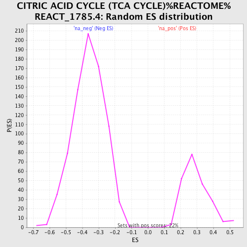

| | | Dataset | Adult_Heart |
| Phenotype | NoPhenotypeAvailable |
| Upregulated in class | na_pos |
| GeneSet | CITRIC ACID CYCLE (TCA CYCLE)%REACTOME%REACT_1785.4 |
| Enrichment Score (ES) | 0.94952387 |
| Normalized Enrichment Score (NES) | 3.2025013 |
| Nominal p-value | 0.0 |
| FDR q-value | 0.0 |
| FWER p-Value | 0.0 |
Table: GSEA Results Summary
Fig 1: Enrichment plot: CITRIC ACID CYCLE (TCA CYCLE)%REACTOME%REACT_1785.4
Profile of the Running ES Score & Positions of GeneSet Members on the Rank Ordered List
| PROBE | GENE SYMBOL | GENE_TITLE | RANK IN GENE LIST | RANK METRIC SCORE | RUNNING ES | CORE ENRICHMENT | | 1 | ACO2 | | | 4 | 1.000 | 0.0545 | Yes |
| 2 | CS | | | 78 | 1.000 | 0.1048 | Yes |
| 3 | DLD | | | 84 | 1.000 | 0.1592 | Yes |
| 4 | DLST | | | 85 | 1.000 | 0.2139 | Yes |
| 5 | NNT | | | 194 | 1.000 | 0.2621 | Yes |
| 6 | OGDH | | | 199 | 1.000 | 0.3165 | Yes |
| 7 | SDHA | | | 237 | 1.000 | 0.3690 | Yes |
| 8 | SDHD | | | 239 | 1.000 | 0.4237 | Yes |
| 9 | FH | | | 363 | 0.966 | 0.4690 | Yes |
| 10 | IDH2 | | | 377 | 0.966 | 0.5211 | Yes |
| 11 | MDH2 | | | 397 | 0.966 | 0.5727 | Yes |
| 12 | SDHB | | | 456 | 0.966 | 0.6221 | Yes |
| 13 | SDHC | | | 457 | 0.966 | 0.6749 | Yes |
| 14 | SUCLA2 | | | 645 | 0.931 | 0.7145 | Yes |
| 15 | SUCLG1 | | | 646 | 0.931 | 0.7654 | Yes |
| 16 | SUCLG2 | | | 647 | 0.931 | 0.8164 | Yes |
| 17 | IDH3A | | | 725 | 0.897 | 0.8608 | Yes |
| 18 | IDH3G | | | 726 | 0.897 | 0.9098 | Yes |
| 19 | IDH3B | | | 850 | 0.862 | 0.9495 | Yes |
Table: GSEA details [plain text format]

Fig 2: CITRIC ACID CYCLE (TCA CYCLE)%REACTOME%REACT_1785.4: Random ES distribution
Gene set null distribution of ES for CITRIC ACID CYCLE (TCA CYCLE)%REACTOME%REACT_1785.4